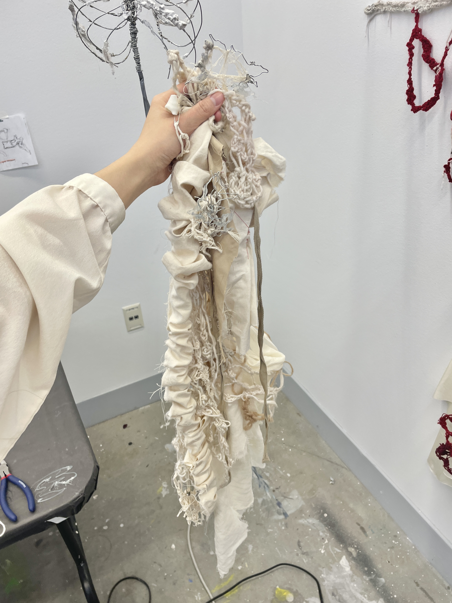
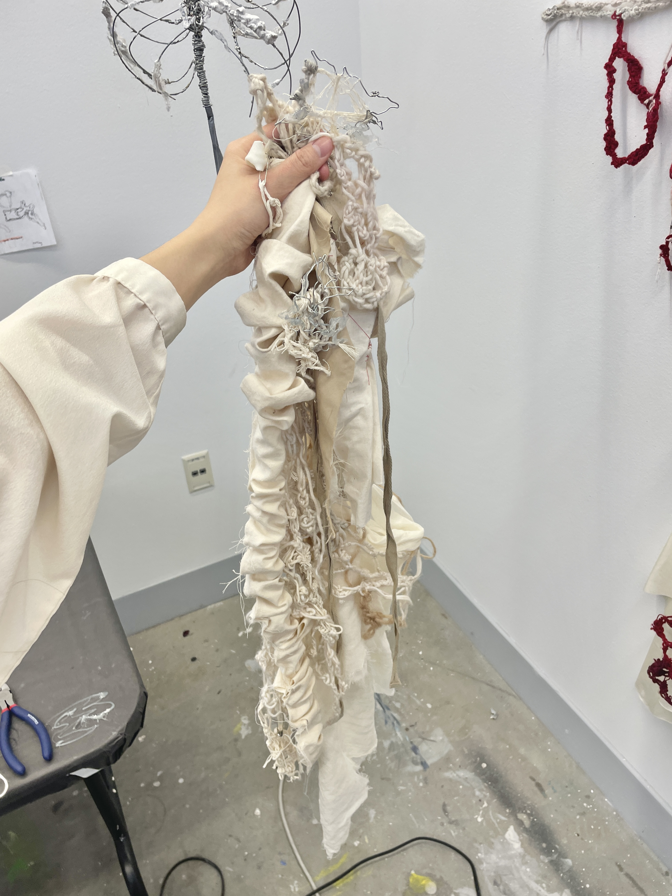

Ying Ruan
holding it is like cradling a child
there’s a bit of a mass to it
rearranging the yarn like tousling someone’s hair
the mass slips from my fingers and i have to adjust it in my arms for security
i’m picking up their entrails
a mother shouldn’t have to see this
Over time, I slowly came to realize that I have a body, and along with this came the incessant discoveries of its limitations and sites of failure. I have dysphoria in the sense that I am uncomfortable with having a body in the first place. It is not gender or body dysphoria, but something more like human dysphoria. I was never human and will never become human. “I” as a concept disturbs me, and although my use of this pronoun is convenient and habitual, I am in pursuit of an alternative (Similarly, I do not view God as “he”).
The components of my art mimic the way I understand my posthuman existence to be deteriorated and fragmented and continually recomposed through experience. Though this entity of a body may be characterized by different labels, I embrace these qualities while rejecting essentialist perceptions. Rather, I am more interested in the relationships between deconstructed entities as well as their roles within communities— how do they carve into each other, and what impressions do their existences leave?
Memories are memories of memories of memories. Are they true to their origin? This is insignificant. Each memory is an evaluation of previous recalls. Only the present can decide reality. If the source is deprecated, does its vessel retain its identity?
Everything is fluid, everything can be reframed, everything is a medium for acquiring memories. Through the curation of constructed and encountered objects containing previous histories, the work forms a living archive of memory fragments and functions as a method of processing through documentation. The deteriorated materials, already provokingly corporeal in nature, are recomposed for observation and objectification, resulting in the conception of an even more visceral creature that is constantly growing, expanding, bifurcating. It tells you, “You wanted to see this, you asked this of me.”

 
